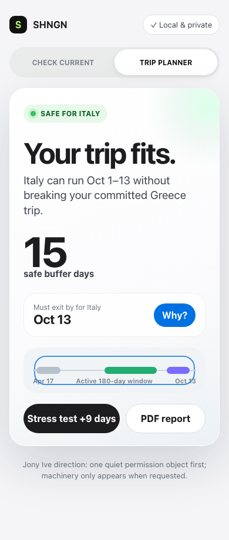
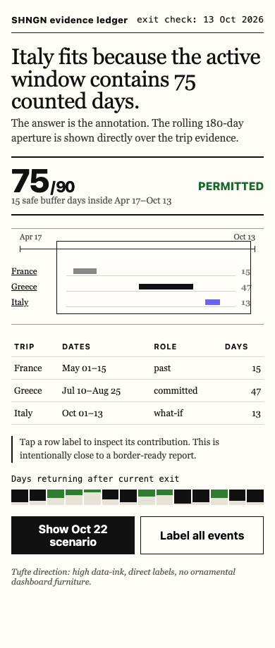
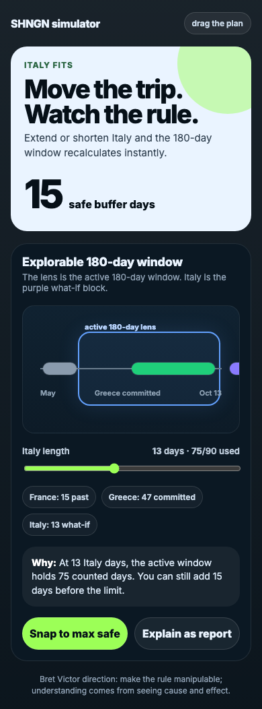
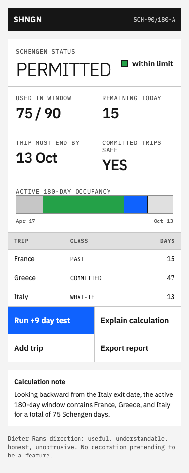
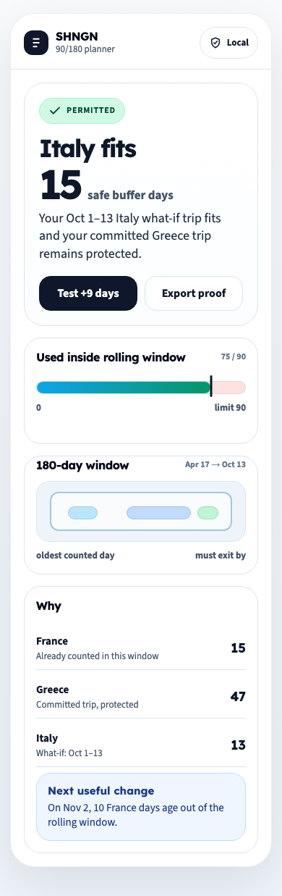

Ive / calm permission object
One premium answer card. Lowest anxiety, least visible machinery.
Open variantDisposable HTML sketches for the Schengen 90/180 key view: premium permission object, evidence ledger, explorable simulator, compliance appliance, and a UI UX Pro Max-informed trust instrument.

One premium answer card. Lowest anxiety, least visible machinery.
Open variant



Public-service palette, bullet KPI, mobile accessibility rules, proof ledger.
Open variantComparison notes: docs/visionary-sketch-comparison.md. Earlier direction note: docs/visionary-design-directions.md. UI UX Pro Max notes: docs/ui-ux-pro-max/schngn-synthesis-notes.md.